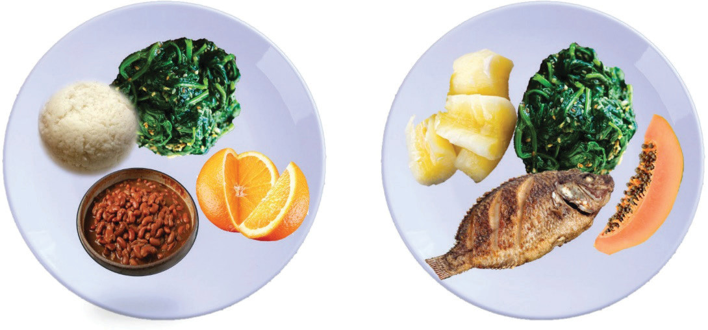

Balanced meal
A meal refers to all foods eaten at one time or on one occasion, such as breakfast, lunch or supper. A meal is made up of different dishes. A dish is a food prepared in a particular way as part of the meal. A balanced meal comprises a variety of foods from all food groups. It should contain adequate amounts and proportions of nutrients needed by the body for growth, repairing damaged tissues and maintaining good health. These nutrients are carbohydrates, fats, proteins, minerals and vitamins. Since no single food can provide all nutrients in the right amount, good nutrition depends on getting a variety of different foods from all food groups. In addition, one should consider enough water and roughage as important contents in a balanced meal. Figure 2.3 shows examples of balanced meals from different food groups.

Note: The two plates indicate balanced meals prepared from different food groups. A person can choose to eat food from either plate and still get the required nutrients.

Determining a balanced meal
Procedures
1. Provide a list of all the dishes you ate yesterday.
2. Name the nutrients found in the dishes.
3. Assess whether the meal was balanced or not.
4. Prepare a report on your assessment.